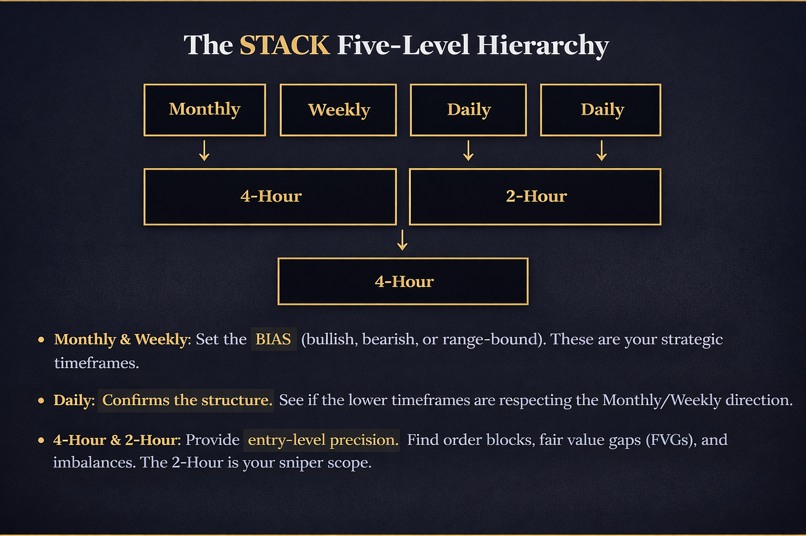
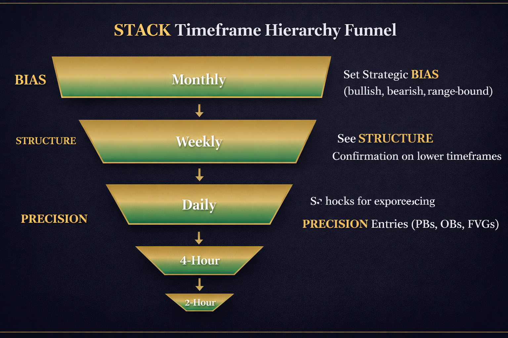
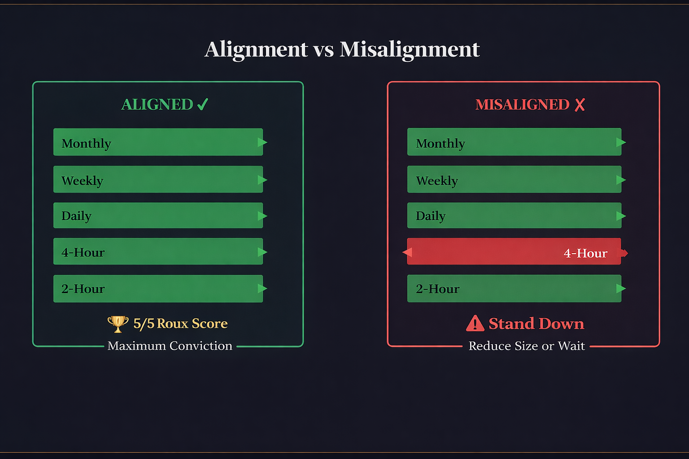

Top-Down Analysis — The A in STACK
Understanding Alignment Across Timeframes
What is Top-Down Analysis?
The A in STACK stands for Alignment. The acronym itself is a principle: "All timeframes (Monthly/Weekly/Daily/4H/2H) must point the same direction." This is the foundation of top-down analysis.
Top-down analysis means starting from the highest timeframe and working your way down toward the entry. You don't begin with the 2-hour chart and hunt for trades. You begin with the monthly chart and ask: "What is the big picture? What direction are we biased toward?" Then you descend through the hierarchy—weekly, daily, 4-hour—each timeframe filtering and confirming (or contradicting) the thesis you built on the level above.
Here's the critical rule: The higher timeframe is the boss. It dictates the bias. Lower timeframes provide precision for entries, but they cannot override the direction set by the monthly and weekly.
This is why so many traders fail. They spot a 5-minute buy signal, jump in, and immediately get stopped out. Why? Because they never checked the daily chart. The daily was in a downtrend. The weekly was still printing lower lows. The monthly bias was bearish. Their 5-minute entry was swimming against a four-level current. Top-down analysis prevents this mistake.
The Timeframe Hierarchy
The STACK framework uses a specific hierarchy of timeframes. Each level filters the next. Think of it as a funnel: the higher timeframes are wider and set the rules; the lower timeframes are narrower and provide precision.


Each level must be checked in order. You never skip levels. A trader who jumps straight to the 4-hour without checking the monthly is flying blind.
How to Run a Top-Down Analysis — Step by Step
Here is the exact process. Run through these steps before you place any trade.
Step 1: Monthly
Pull up the monthly chart. Answer three questions:
- What is the overall trend? Are we in a monthly uptrend (higher highs, higher lows), downtrend (lower highs, lower lows), or consolidating?
- Where are the major liquidity pools? What levels have price rejected repeatedly? Where is the recent order block or demand/supply zone?
- Where is price relative to the range—premium or discount? Is price in the upper half of a monthly range (premium) or lower half (discount)? This tells you if bulls or bears are in control structurally.
Output: Bullish, bearish, or neutral bias for the month. And key levels to watch.
Step 2: Weekly
Drop to the weekly chart. Ask:
- Is the weekly structure aligned with the monthly? If the monthly is bullish, is the weekly printing higher lows and higher highs? Or is it contradicting?
- Where are the weekly order blocks, FVGs, and mitigated/unmitigated levels?
- Is the weekly closer to the top or bottom of its structure?
Output: Confirmation or conflict with the monthly bias. Refined bias statement.
Step 3: Daily
Now to the daily. Check:
- Does the daily structure confirm the direction set by monthly and weekly?
- Is the daily in an uptrend, downtrend, or range relative to the monthly/weekly bias?
- Where is the nearest daily order block or demand/supply zone? Is there an unmitigated daily level that aligns with your bias?
- Has price recently broken a key daily level (a change of character, or CHoCH)?
Output: Directional thesis confirmed or invalidated. Key entry zones identified.
Step 4: 4-Hour
Move to the 4-hour:
- Is the 4-hour building structure in the same direction as the daily?
- Where is the 4-hour order block that aligns with your daily level?
- Is the 4-hour showing strength into your bias, or weakness/rejection?
Output: Refined entry zone (usually a 4-hour order block near a daily level).
Step 5: 2-Hour (The Sniper Timeframe)
Finally, the 2-hour:
- Refine the entry zone. Look for the exact trigger here (as covered in Module 4: Triggers).
- Is the 2-hour showing a buy-side or sell-side setup within your refined zone?
- Where is the 2-hour order block that will catch your entry?
Output: Precise entry point with context from all four levels above.
Alignment = Conviction
When all five timeframes agree—bullish Monthly, bullish Weekly, bullish Daily, bullish 4-Hour, bullish 2-Hour—you have maximum conviction. This is what the Roux Score measures: S + T + A + C + K.
The A is Alignment, and it is worth 1 full point on the Roux Score.
- If all timeframes align with your bias: A = 1 point
- If timeframes disagree: A = 0 points
This means a trade can have perfect Structure (S=1), perfect Trend confirmation (T=1), poor Alignment (A=0), perfect Confluence (C=1), and a perfect Kill (K=1). Your Roux Score would be 4/5—solid, but not maximum conviction. You trade it with reduced size or tighter stops.
Conversely, when S+A+C+K are all 1 and T is 1, you have a 5/5 setup. This is when you add size, hold longer, and trust the move.
Alignment directly drives conviction, and conviction drives position sizing and holding power.

What Misalignment Looks Like
Misalignment is easy to spot once you know what to look for.
- Scenario 1: Monthly is bullish (higher highs, higher lows). Weekly is bullish. Daily is bullish. But the 4-hour just printed a CHoCH to the downside. Misalignment. The higher timeframes say "go up," but the 4-hour is saying "wait." What do you do? You stand down or reduce size. You do not trade the 2-hour bearish trigger. The 4-hour warning tells you the setup is not yet confirmed.
- Scenario 2: Monthly is bearish. Weekly is still holding bullish structure. Misalignment. There is a conflict between the top two timeframes. A trade here is risky. You wait for the weekly to confirm the monthly direction or for the monthly to reverse. Until alignment is restored, you reduce participation.
- Scenario 3: Daily is bullish. 4-hour is bullish. 2-hour is bullish. But the weekly just printed a lower high. Partial misalignment. You can still trade the lower timeframe move, but you know it is within a larger weekly structure that is being threatened. You take profits earlier and do not hold for extensions.
The rule is simple: higher timeframe wins. You do not trade against it. If the weekly is bearish, you do not trade a bullish 2-hour setup. Wait for the 2-hour move to break the weekly structure, or skip the trade.
Common Mistakes
These mistakes destroy accounts. Avoid them.
- Only looking at one timeframe (no context): A trader sees a breakout on the 15-minute chart and enters. They never checked the hourly, 4-hour, or daily. Result: they entered into a counter-trend move. They get stopped out immediately. Always run the full top-down.
- Trading against the higher timeframe bias: "The daily is bearish, but it LOOKS bullish on the 5-minute!" This is the second-most common mistake. The 5-minute does not override the daily. The daily does. Wait for the 5-minute to align with the daily, or skip the trade.
- Not checking alignment before entering: A trader spots what looks like a perfect structure on the daily, sees a good trigger on the 4-hour, and enters without checking the monthly and weekly. Three days later, the monthly reverses and the daily collapses. They lost 3:1 on a setup that looked good in isolation but failed in context. Always check alignment first.
Top-down analysis solves all three. Make it habit.
Top-Down and the STACK
Let's tie this back to the full framework.
S (Structure) tells you what is happening on the current timeframe. Is price breaking above an order block? Retesting a high? Printing a lower low?
A (Alignment) tells you if the OTHER timeframes agree with what you see on your current timeframe. Is the higher timeframe bullish? Are the lower timeframes confirming your directional thesis?
Together, S + A give you a directional thesis before you ever look for a Trigger. You know where you are biased, you know why, and you know the structure supports it across multiple timeframes. Then you add T (Trend), C (Confluence), and K (Kill) to build conviction and find your precise entry.
Top-down analysis is not optional. It is the foundation.
Key Takeaways
- Top-down analysis means starting from the highest timeframe (monthly) and working down to the entry timeframe (2-hour). Each level filters the next.
- The higher timeframe is the boss. Monthly and weekly set the bias. Daily confirms structure. 4H and 2H provide entry precision. Lower timeframes cannot override higher ones.
- Alignment = all five timeframes (M/W/D/4H/2H) pointing the same direction. Alignment is worth 1 full point on the Roux Score. It drives conviction and position sizing.
- Misalignment means stand down or reduce size. Do not trade against the higher timeframe. Do not skip levels. Wait for alignment to restore or for the structure to formally break.
- The most common mistake is only looking at one timeframe (usually the lowest one). Always run the full top-down before entering. Context is everything.
Practice Exercise
Run a Full Top-Down
Pick one ticker of your choice (stock, crypto, forex, or commodity). Run a complete top-down analysis from monthly to 2-hour.
At each level, note the following:
- Bullish or bearish structure? (higher highs/lows vs. lower highs/lows, or range-bound)
- Nearest key level: Order block, fair value gap, or demand/supply zone
- Unmitigated levels: Are there untouched order blocks that align with your bias?
At the bottom (after you've reviewed all five timeframes), write:
- Your directional bias (bullish, bearish, or neutral)
- Your Alignment score (A = 1 if all timeframes agree, A = 0 if they conflict)
- Confidence level: would you trade this setup right now? Why or why not?
This exercise builds the habit of top-down thinking. Do it every day for one week on different tickers. By the end, you'll be running a top-down analysis in under 5 minutes.